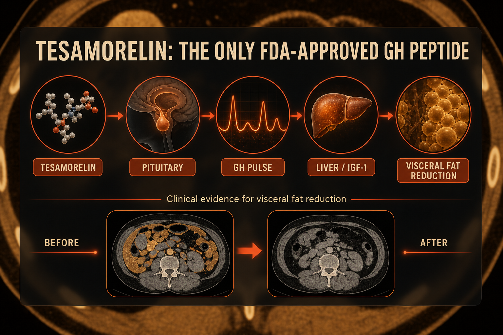

What Tesamorelin Is
Tesamorelin (brand name Egrifta) is a synthetic GHRH analog FDA-approved in 2010 for HIV-associated lipodystrophy - the abnormal visceral fat accumulation caused by antiretroviral therapy. It remains the only growth hormone peptide with full FDA approval, meaning it has more clinical trial data than any other GH peptide except synthetic HGH itself.
Tesamorelin more closely mimics full-length GHRH than CJC-1295, producing robust physiologically appropriate GH stimulation with preserved pulsatility - not supraphysiological levels. The research peptide community uses it off-label for visceral fat reduction and body recomposition based on the well-characterized mechanism.
Plain English Version
The Approved Blueprint
Most GH peptides are like architectural sketches - good design principles, solid preclinical evidence, but not fully built and inspected to clinical standards.
Tesamorelin is the approved blueprint. The FDA reviewed clinical data, safety profile, mechanism, and human outcomes - and approved it. The specific indication is visceral fat reduction in a particular population. But the blueprint - GHRH stimulation driving GH driving IGF-1 driving visceral fat metabolism - applies broadly.
For visceral fat specifically (the fat around organs, inside the abdominal cavity), tesamorelin has the best-supported mechanism of any GH peptide. The retatrutide glucagon component targets visceral fat through a different pathway. Together they address it through two distinct mechanisms.
One sentence: Tesamorelin is the only FDA-approved GH peptide, with the strongest clinical evidence for visceral fat reduction of any compound in this category.
How To Picture It

How It Works
Tesamorelin binds GHRH receptors in the anterior pituitary, stimulating pulsatile GH release. Released GH stimulates hepatic IGF-1 production. IGF-1 drives visceral adipose tissue metabolism - reducing fat cell size in omental and mesenteric fat depots. Unlike direct fat burners, tesamorelin shifts the hormonal environment to reduce visceral fat accumulation over time.
Documented Benefits
most clinically documented benefit; significant trunk fat reduction in FDA trials
downstream of GH stimulation
lean mass preservation alongside fat reduction
secondary benefit documented in trials
secondary findings
Dosing Protocol
| Phase | Dose | Frequency | Timing |
|---|---|---|---|
| Standard | 1mg | Daily | Fasted bedtime preferred |
| Advanced split | 1mg AM + 1mg pre-bed | Twice daily | Both fasted |
| Minimum | 1mg | 5 days weekly | Fasted |
Reconstitution Standard
TSM (2mg vial) + 2ml BAC water = 1mg/ml 1mg = 100 units = 1.0ml (clean math - one full insulin syringe)
Dosage Build-Up Timeline
- Week 1-4: 1mg daily fasted - baseline GH response
- Week 5-12: Continue or add split dosing
- Week 13: Bloodwork - IGF-1 assessment
- Week 17-24: Reassess continuation or cycling
Common Mistakes
food blunts GH release
visceral fat reduction is slow; assess at 12-16 weeks
waist circumference is the key metric
primary measurement for visceral fat change
Contraindications And Cautions
GH/IGF-1 elevation concern
closely monitor glucose
GHRH receptor stimulation concern
GH can cause water retention
WADA prohibited
What To Track
- Waist circumference monthly - primary measurement
- IGF-1 bloodwork at baseline and 12-week mark
- Fasting glucose
- Body weight and fat assessment monthly
- Energy and sleep quality weekly
Stacks Well With
- Ipamorelin - GHRH plus GHRP dual-pathway
- Retatrutide - dual visceral fat targeting via different mechanisms
- KLOW - tissue repair alongside metabolic optimization
Sources
- FDA Egrifta prescribing info. accessdata.fda.gov
- Falutz J et al. Tesamorelin visceral fat trial. NEJM 2010. pubmed.ncbi.nlm.nih.gov
- PeakedLabs. Tesamorelin comparison 2026. peakedlabs.com
- ClinicalTrials NCT00458445. clinicaltrials.gov
For educational and research documentation purposes only. Not medical advice. Always speak with a qualified healthcare professional before making health decisions.